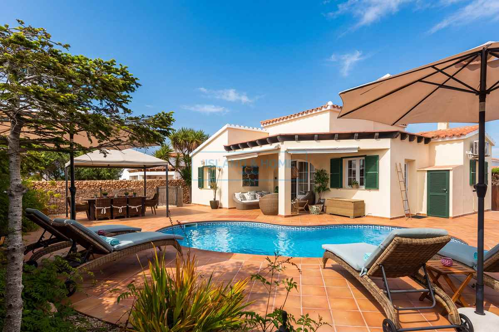

€599.950
Cala’n Porter, Alaior, Menorca
Open the listingCozy move-in-ready pool villa under €600k: mature hedged oasis with central private pool, sun/shade terraces and built-in BBQ, open light-filled living, AC bedrooms and active tourist licence on a quiet Cala’n Porter street. Punches hard under the usual private-pool band.
Opened 7 Sep 2026. Asking €599,950. Specs: 3 bed / 3 bath (2 full per copy; schema lists 3) / 124 m² / 425 m² + parking + tourist licence + partially furnished. Distinct from board calan-porter-34502 (€625k / 180 m² / 508 m²) and calan-porter-cliff.